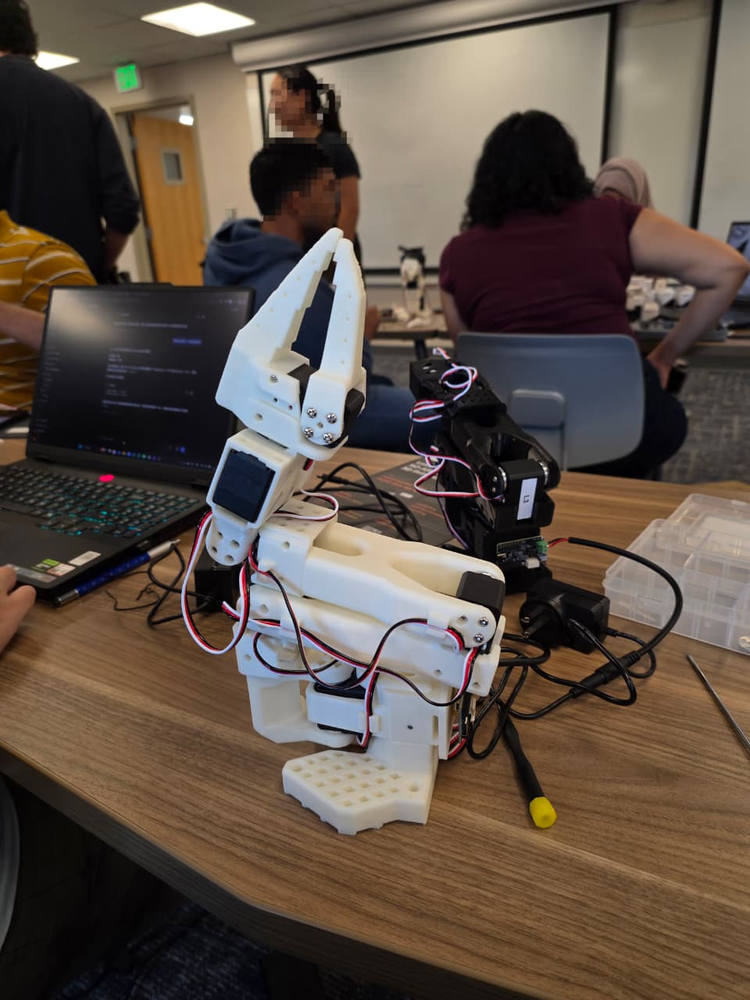

LeRobot SO-101 Robot Learning
A course project using the low-cost, open-source LeRobot SO-101 arm in a leader-follower setup for robot learning. So far, both arms are assembled and calibrated, and teleoperation works.

Overview
The setup
The LeRobot SO-101 is a low-cost, open-source robotic arm platform used to explore robot learning through real-world data collection, teleoperation, and learned policies.
The project uses a leader-follower setup: the leader arm (dark) is moved by a human for demonstration, and the follower arm (white) reproduces the demonstrated motions.
Done so far · team
What exists so far
- Built both the leader and follower arms. Assembly was shared by the team.
- Calibrated the arm joints and completed the initial hardware setup.
- Got leader-follower teleoperation working, and used it to verify the calibration (video).
Workflow: calibrate the arms first, then run teleoperation to verify the calibration.
Planned · not done yet
Next steps
- Add camera-based object detection and perception.
- Collect demonstrations and train the follower to pick up objects.
- Deploy learned policies on the physical arm.
- Explore Vision-Language-Action (VLA) approaches, if feasible within the course timeline.
Planned role: developing the software pipeline for deploying learned policies as the project progresses.
Team
Team
3-person course team: Vishek Masalia, Saloni Bagri and Zou Bangyu.